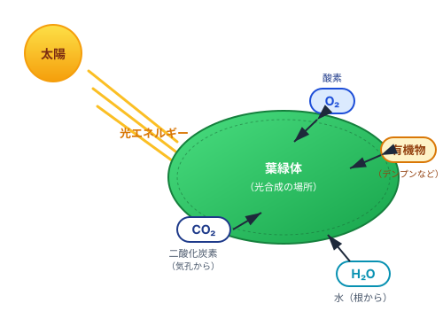
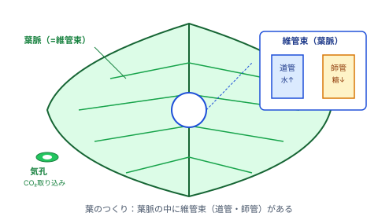
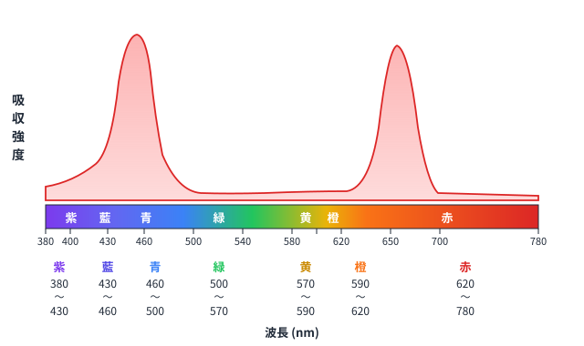

植物はどうやってご飯をつくる？ 光合成の全体像を理解しよう
植物は動物と違い、食べ物を外から取らなくても生きていけます。それは光を使って自分でご飯（有機物）をつくれるからです。この働きを光合成といいます。
光合成は葉の細胞の中にある葉緑体でおこなわれます。根から吸収した水と、気孔から吸収した二酸化炭素（CO₂）を材料にして、光エネルギーを使って有機物（デンプン）と酸素（O₂）をつくります。

図1：光合成のしくみ（葉緑体で水と二酸化炭素から有機物と酸素をつくる）
✅ ミニテスト①（光合成の基本）
Q1. 光合成が行われる細胞小器官はどれか。
Q2. 光合成の材料2つを語群から選んで入れよう。
葉の中には水や栄養を運ぶ管が通っています。この管の束を維管束（＝葉脈）といいます。

図2：葉のつくり（葉脈の中に維管束がある）
| 名前 | 役割 | 覚え方 |
|---|---|---|
| 道管 | 根から吸収した水を葉へ運ぶ | 「道」を通って「水」を運ぶ |
| 師管 | 葉でつくった糖を各部へ運ぶ | 「師」匠の「知識（糖）」を広める |
| 維管束 | 道管＋師管をまとめたもの | 葉では「葉脈」になる |
✅ ミニテスト②（葉のつくり）
Q1. 根から吸収した水を葉へ運ぶ管はどれか。
Q2. 葉でつくった糖を各部へ運ぶ管はどれか。
光合成でつくられた有機物はすぐには使われず、一時的に同化デンプンとして葉緑体に蓄えられます。
✅ ミニテスト③（有機物のゆくえ）
Q1. 光合成でつくられた有機物が最初に蓄えられる形として正しいものはどれか。
Q2. デンプンが糖に変化した後、各部へ運ばれる管はどれか。
葉緑体には複数の光合成色素が含まれています。ペーパークロマトグラフィーで分離できます。
| 色素名 | 色 | 特徴 |
|---|---|---|
| クロロフィルa | 青緑色 | 光合成の中心的な色素。最も重要。 |
| クロロフィルb | 黄緑色 | クロロフィルaを補助する。 |
| カロテン | 橙赤色 | ニンジンに多い。紅葉のときに目立つ。 |
| キサントフィル | 黄色 | カロテンとともに補助色素。 |
✅ ミニテスト④（光合成色素）
Q1. 光合成の中心的な色素で青緑色のものはどれか。
Q2. ニンジンにも多く含まれる橙赤色の色素はどれか。
光の波長ごとに色素がどれだけ光を吸収するかを示したグラフを吸収スペクトルといいます。

図3：光合成色素の吸収スペクトル（青色と赤色に吸収ピーク、緑色はほとんど吸収しない）
✅ ミニテスト⑤（吸収スペクトル）
Q1. クロロフィルが最もよく吸収する光の色の組合せはどれか。
Q2. 葉が緑色に見える理由を語群から選んで完成させよう。